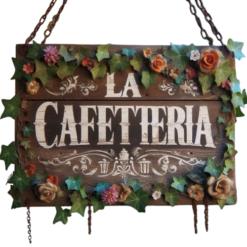

La Cafetería
La Cafetería


O café Cold Brew é um método de infusão que não utiliza água quente para extrair as características do grão. Dessa forma, o resultado é uma bebida gelada com sabor refrescante e leve. Para quem se preocupa com a doçura e a acidez, pode ficar tranquilo porque essas sensações são trazidas na medida certa.